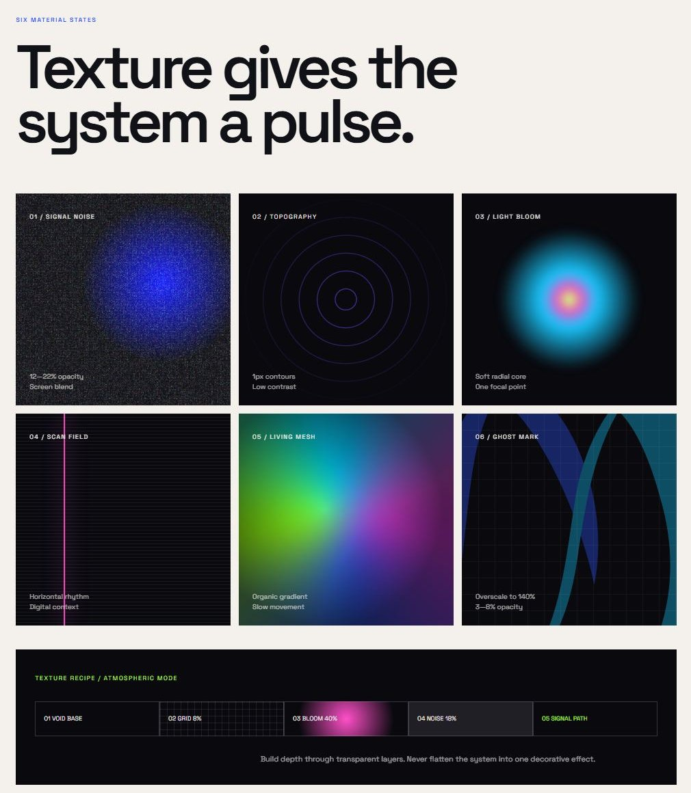
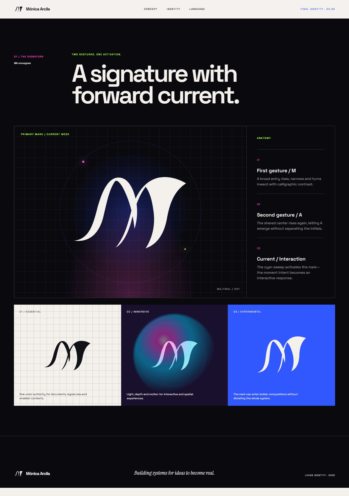
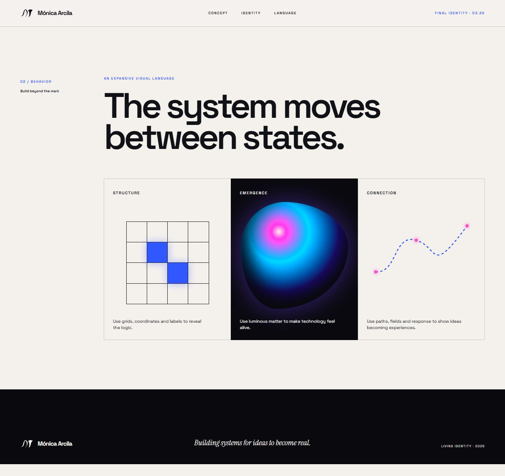
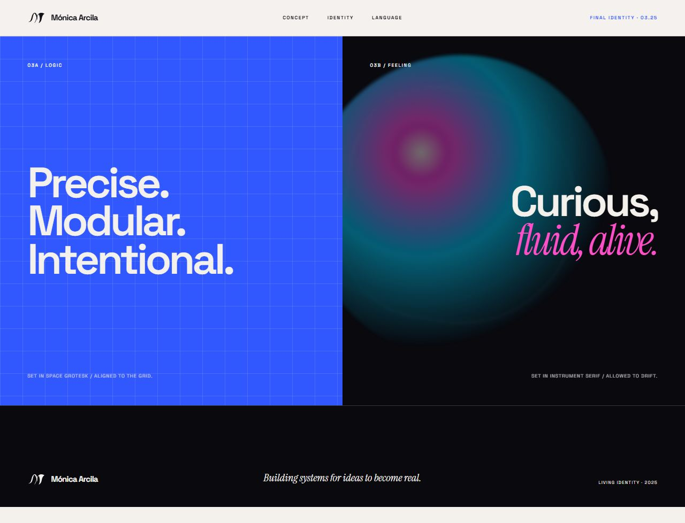
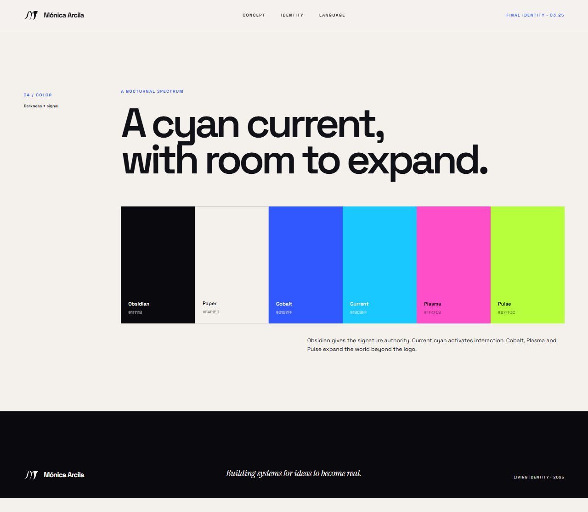
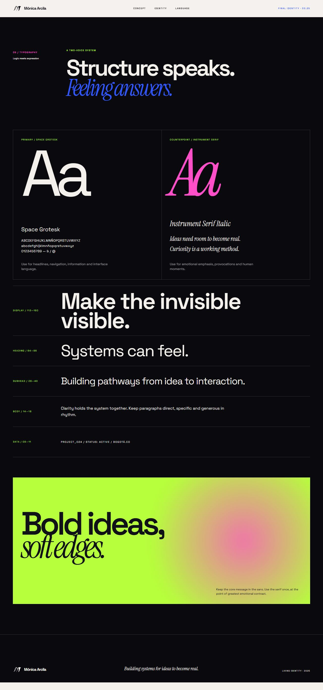
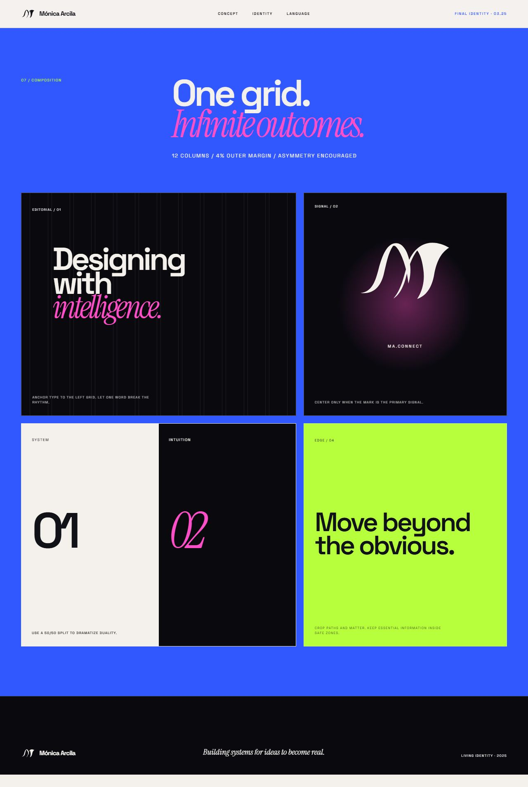
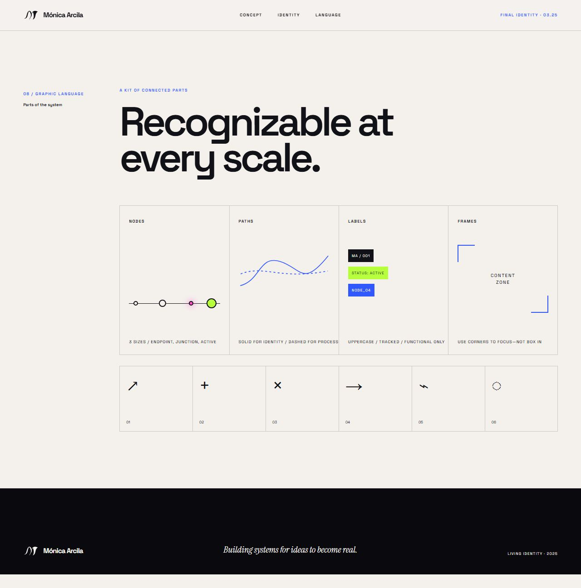
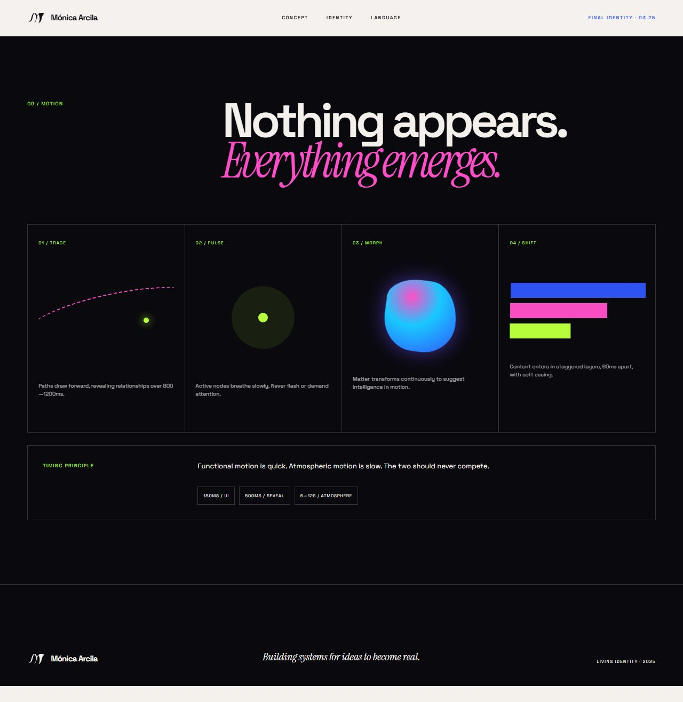
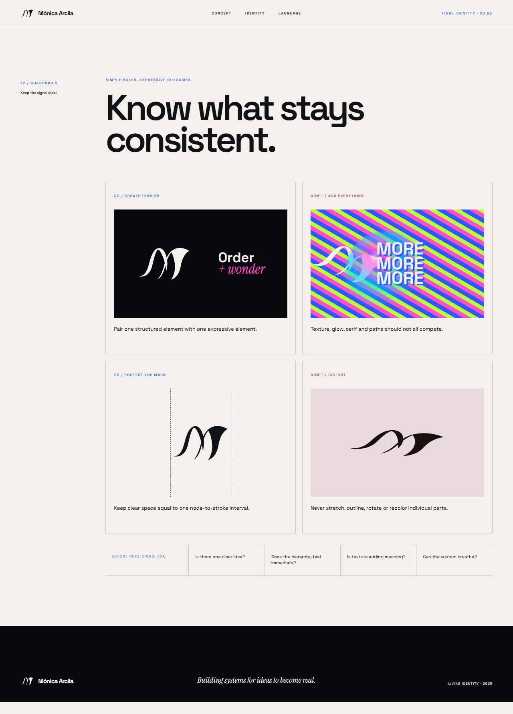

Personal project · identity system
Two gestures,
one current.
a brand you can put on a profile, a card or a screen
Your final logo, your Figma Make manual and my first board, mixed. This page keeps the strongest graphic ideas of each and says which is which (section 1). The idea underneath is yours: two letters, one shape, and a single cyan current that activates it.
1. The mix: what was kept from each
Two systems, one brand. Where they agreed, that is the core. Where they differed, I kept the stronger graphic idea. The one type decision that is yours: Space Grotesk with your handwriting font.
| Idea | From | What it does here |
|---|---|---|
| The MA monogram and its cyan current | Your final logo | The mark, the tab icon, every lockup |
| Space Grotesk for structure | Make manual | All text, labels and headings of the brand |
| Your handwriting font, once per layout | Your choice | The one human line. It is also the thread to the portfolio, which uses the same font |
| Obsidian and Paper as the two bases | Make manual | The Night and Daylight skins |
| Daylight and Night on the same tokens | First board | One layout, two moods; Night sits next to the portfolio |
| Violet as the signature colour | Your final logo | Buttons, links, question bubbles |
| The cyan Current as the only light | Both | My sparkand your currentare the same idea: one per layout, meaning someone is here |
| Plasma as a soft highlighter; Pulse lime very rarely | Make manual | Accents, never on paragraphs |
| Cobalt as the bridge to the portfolio | Both | The portfolio's blue and violet glow sit in the same family |
| Tracked uppercase labels | Make manual | Small functional labels only |
| Asymmetric corners | First board | Cards, bubbles, tiles |
| The six textures: signal noise, topography, light bloom, scan field, living mesh, ghost mark | Make manual | Kept whole as a live section (6): one at a time, for special moments |
| A path with nodes | Both | Dividers, steps, connectors |
| Patterns from the mark (ghost mark) | Both | Your two pattern ideas, redrawn with the new mark, kept very faint |
| One idea per layout; handwriting once; glow never on a paragraph | Both | The guardrails |
2. Lockups
The mark, the name and your motto. Stacked is the main one; the row is for headers; the mark alone is for avatars. Violet on Daylight, light lavender on Night; the cyan stays the same in both.
The motto is yours (Designing to be felt and valued, not just seen
); the short form sits under the lockup, in your handwriting. Keep clear space around the mark equal to the width of the cyan stroke.
3. Reading the mark
Your manual explains the anatomy in three steps. The new mark says M much more clearly than the old knot, and the A is now built in: the shared centre rises again, and the cyan stroke is its crossbar.
Anatomy, from your manual
- 1. First gesture, the M. A broad entry rises, narrows and turns inward with calligraphic contrast.
- 2. Second gesture, the A. The shared centre rises again, letting the A emerge without separating the initials.
- 3. The current. The cyan sweep activates the mark: the moment intent becomes an interactive response.
My honest note: the A is still a gesture rather than a plain triangle, so at first glance some people will read M
and a flourish. That is a feature if you always show the name beside it, as the lockups do.
Does it hold at small sizes?
Down to 48 px the mark reads. Below that, use the tab icon version (the mark on a Paper tile), as the portfolio now does.
4. Four devices that make it recognisable
A brand is mostly a few things repeated. These come from the mark and from your manual, so the brand feels like yours and not like a template.
The current
The cyan stroke of the logo as the one light: a live state, a hover, a progress mark. One per layout.
The path
A line with nodes: endpoint, junction and one active node in cyan. For steps, dividers and connections.
The ghost mark
The mark overscaled to about 140 percent at 3 to 8 percent opacity, behind a headline.
The voice
Space Grotesk does the work; your handwriting says one short, human thing.
5. Patterns
Your two pattern ideas, redrawn with the new mark: one mirrors it top and bottom, the other mirrors it four ways. Keep them quiet: backgrounds for covers, quote tiles and the back of a card, never behind a paragraph.
Pattern A: mirror
The mark above its reflection. Calm and symmetrical: the default.
Pattern B: four ways
The mark mirrored left, right, up and down, so the cyan strokes meet in the middle. More energetic: covers and bigger moments.
Pattern A on Night
Light lavender at low opacity: texture without competing with text.
Pattern B on Night
The same idea for the portfolio's side of the brand.
6. Textures: digital matter
The six textures Figma Make built for your manual, kept here so they are not lost. They are live (CSS only, no images except the ghost mark, which is your final logo), made for a dark base. In your manual's words: texture gives the system a pulse.
Use one at a time, never all together.
12–22% opacity
Screen blend
1px contours
Low contrast
Soft radial core
One focal point
Horizontal rhythm
Digital context
Organic gradient
Slow movement
Overscale to 140%
Your final logo, faint
- Void base
- Grid 8%
- Bloom 40%
- Noise 18%
- Signal path
Build depth through transparent layers. Never flatten the system into one decorative effect.
How these are used in the mixed brand: the ghost mark and the two patterns are the everyday textures; the others (noise, topography, bloom, scan field, mesh) are for special moments such as a cover, a launch post or a title screen, and for Night only.
Your Make manual, kept
Screenshots of its sections, so the whole system is in one place. Click one to open it full size. (A complete copy of the manual's files is kept privately in the project folder.)

Textures: six material states
The signature and its anatomy
Behavior: structure, emergence, connection
Logic and feeling
Colour: darkness and signal
Typography
Composition: one grid
Graphic language: nodes, paths, labels, frames
Motion: trace, pulse, morph, shift
Guardrails: keep the signal clear7. Colour
Violet is the signature, the cyan current is the light, Obsidian and Paper are the two bases. Cobalt, Plasma and Pulse are for the edges. Proportion: mostly base, then ink, then violet, with the current as a rare accent.
60 base · 25 ink · 10 violet · 5 current and accents
| Pair | Contrast | Use |
|---|---|---|
| Obsidian on Paper | 16.7 : 1 | Body text, headings |
| Muted on Paper | 6.1 : 1 | Secondary text |
| Deep violet on Paper | 10.4 : 1 | Links, labels |
| White on Violet | 10.3 : 1 | Buttons, bubbles |
| Paper on Obsidian | 16.7 : 1 | Body text on Night |
| Lavender on Obsidian | 8.2 : 1 | Links, labels on Night |
| Current on Obsidian | 9.6 : 1 | The cyan light |
| Current on Paper | 1.7 : 1 | Decoration only; never text |
| Plasma on Obsidian | 6.4 : 1 | Accents |
8. Type and voice
Two voices, with your manual's rule: structure speaks, feeling answers. Space Grotesk carries everything you read; your handwriting font is used once per layout, for one short human line.
Say it plainly.
Space Grotesk Regular for every paragraph: clear, even, easy to read at length. Tracked capitals for small labels.
Your handwriting: one short line, never a paragraphVoice, from your own outline
- Analytical: say what the data can and cannot show.
- Narrative: tell what happened, in order, as a person.
- Conversational: short sentences; write to one reader.
- Clear for the average person: explain, don't show off.
What to avoid (your own notes)
- Glow or thin type on anything long.
- Space or astronaut imagery.
- Claims you cannot back up with a project.
- All the effects at once: one idea per layout.
9. Where it lives
The brand in use. Your outline mentioned a dedicated Instagram account as a start; this is what its first six posts could look like, plus a banner, a card and a signature.
Instagram grid


The quote tiles use your outline's own sentences. The project tile uses a card image already on your site.
LinkedIn banner (4 : 1)
Business card, front and back (3.5 × 2 in)
Email signature
[website]
10. How it relates to the portfolio
The portfolio is the stage
Dark, lit, full of movement, in the lotus system (Sora, the handwriting font, neon violet and cyan glow). It shows the work. The only piece of the brand it carries is the MA monogram as its tab icon.
The brand is the person
Daylight by default, calm, made for reading and printing, in the mixed system above. It shows how I think. Night is the same brand next to the portfolio. Both share your handwriting font and the cyan and violet family, so the two read as the same person.
The mark is used in two places only: the tab icon of the portfolio, and the personal brand (this board, Ask Mónica and the brand applications).
11. Personal brand checklist
What a personal brand is made of, where you are today, and one next step for each. Tick the boxes as you go; ticks are saved in this browser only. Today's status is based on what exists on your site, in your outline and on this board.
Where this comes from
- The article you found: LinkedIn community article
How can you showcase your portfolio online?
(six steps: platform, consistent brand, best work, story, social proof, promotion). It says it was written with AI help, so treat its advice as a starting point. - Adobe Express: Personal Branding Guide (positioning, audience, consistency across channels).
- Ramotion: Personal Branding, definition, elements and examples (purpose and values, voice, visual identity, proof).
- Made Good Designs: Personal Branding for Designers (a considered mark, consistency of visuals).
- UX Design Institute: what hiring managers look for in a UX portfolio (fewer, deeper case studies; process and outcomes).
- Uxfolio: UX designer portfolio, what hiring managers look for.
Researched on 5 October 2026 with Claude Code (web search); the summaries are mine, written for your situation.